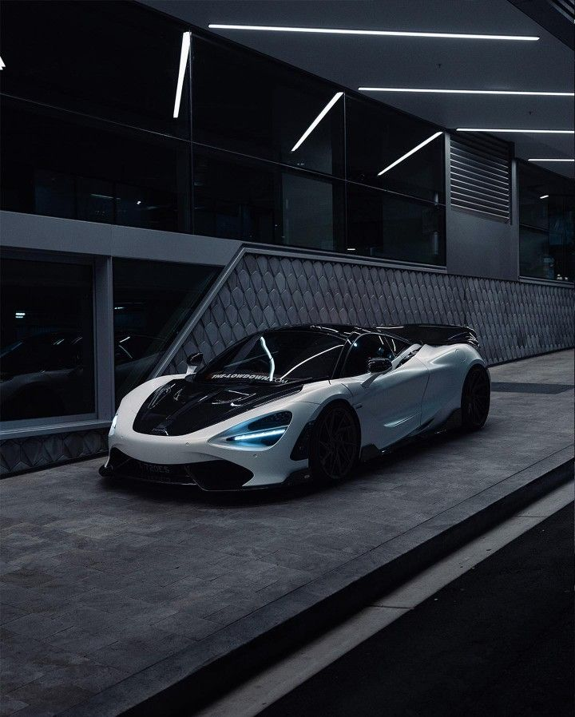

McLaren 720S рожден философией дизайна McLaren: все не просто так.
Мощная простота и целостность этого духа формируют потрясающие автомобили.
Через интенсивный эволюционный процесс.
Радикальная форма 720S вдохновлена каплевидной очертанием.
Идеальная природная аэродинамическая форма.
Он принимает такую форму, потому что помогает обеспечить превосходную производительность.
И аэродинамическая эффективность. Каждая деталь дизайна одинакова.
Создан для повышения производительности. Отточите управляемость.
Усильте вовлеченность. Повышение комфорта. Красиво.